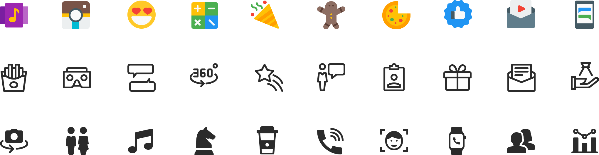
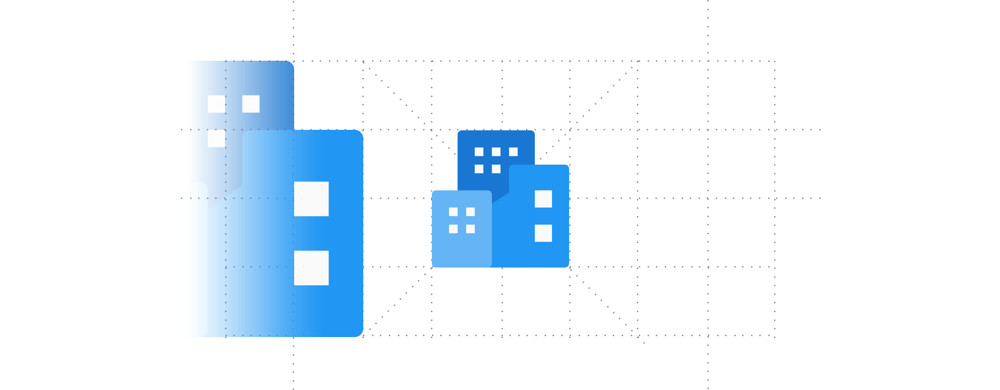
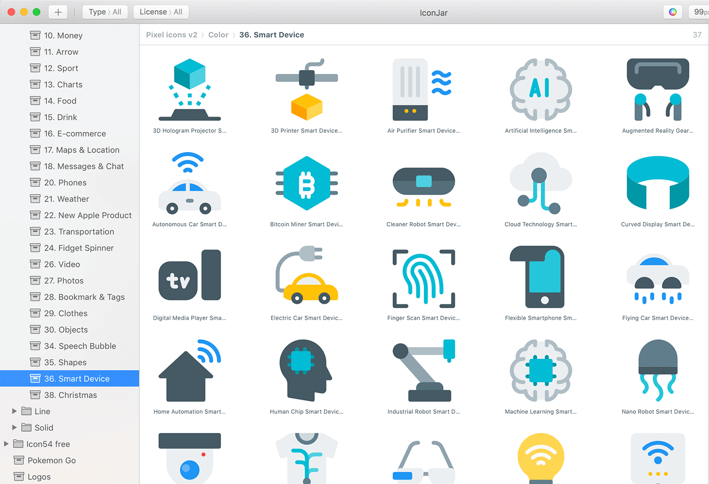

6,500 unique icons in different categories. Drawn by hand and designed for perfection.
6,500 unique icons in 3 style color, line and solid.
All icons are designed on a 16 px grid system which ensures consistency and the sharpest display.
We support the Iconjar application. Searching for icons has never been this easy. Import the 6,500 icons into the application with one click. They are categorized and keyword friendly.
Many formats for full flexibility for all types of software apps and more.
We are super impressed by the quality and quantity of the icons from Pixelicons. The pixel perfection really makes a noticeable difference. The icons are organized with categories and keywords, making it easy and less time consuming. Highly recommended for designers and web developers.